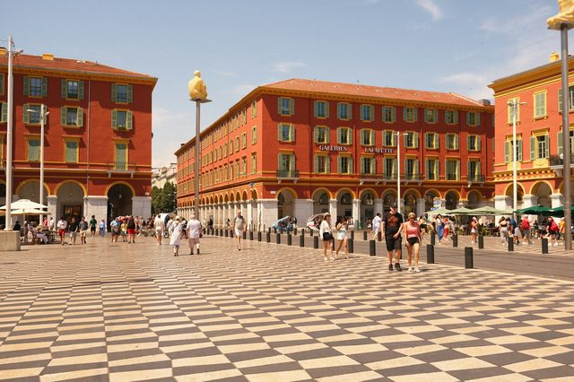
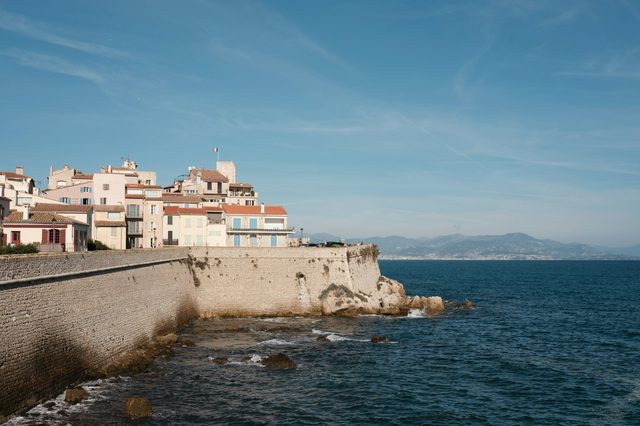
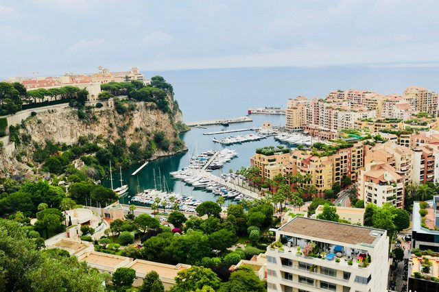
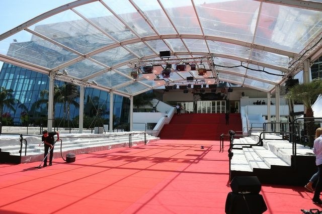

Visiter la Côte d’Azur
Villages perchés, îles à quinze minutes de la Croisette, ports de légende : la Riviera se visite très bien sans voiture, à condition de savoir où aller et quand.
Photo : Antoine Contenseau / Unsplash
La Côte d’Azur s’étire de Saint-Tropez à Menton, entre le Var et la frontière italienne. Le train côtier relie la plupart des grandes villes, Nice et Cannes servent de camp de base, et beaucoup de sites se combinent dans la même journée.
Le plus difficile n’est pas de trouver quoi voir, c’est d’éviter les embouteillages de juillet-août et les heures où les cars de croisière arrivent. Chaque guide ci-dessous vous dit comment y aller et à quel moment. Nous y avons ajouté les grandes excursions qu’on fait depuis la Riviera, comme Porquerolles ou les gorges du Verdon.
Villes et bord de mer
-
 Monaco
MonacoDeux kilomètres carrés, un palais, un casino et l’un des plus beaux musées de la mer d’Europe. Monaco se visite à pied en une journée.
-
 Saint-Tropez
Saint-TropezUn ancien village de pêcheurs devenu légende. Hors saison, Saint-Tropez redevient un petit port provençal ; en été, mieux vaut y arriver par la mer.
-
 Nice
NiceLa capitale de la Riviera : une baie immense, une vieille ville aux façades ocre et des musées dignes des plus grandes villes.
-
 Cannes
CannesBien plus qu’un festival : une vieille ville perchée, un marché provençal couvert et deux îles sauvages à un quart d’heure de bateau.
-
 Antibes
AntibesDes remparts face à la mer, un musée Picasso dans un château et l’un des plus beaux sentiers côtiers de la Riviera.
-
 Villefranche-sur-Mer
Villefranche-sur-MerL’une des plus belles rades de la Méditerranée, un village aux façades ocre et rose, et une chapelle de pêcheurs entièrement décorée par Cocteau.
-
 Saint-Jean-Cap-Ferrat
Saint-Jean-Cap-FerratLa presqu’île des milliardaires, mais aussi l’un des plus beaux sentiers côtiers de France et une villa rose entourée de neuf jardins.
-
 Menton
MentonLa perle de la France, collée à l’Italie : la ville la plus douce de la Côte, ses façades colorées, ses citrons et ses jardins.
-
 Fréjus et Saint-Raphaël
Fréjus et Saint-RaphaëlLes vestiges romains de Fréjus, le Vieux-Port de Saint-Raphaël et la corniche rouge de l’Estérel.
Quartiers de la Riviera
-
 La Croisette
La CroisetteLe Palais des Festivals, les palaces et les plages, du Vieux-Port à la pointe Croisette.
-
 Le Suquet
Le SuquetLes ruelles du vieux Cannes, la tour du Suquet, le musée et le marché Forville.
-
 Le Vieux-Nice
Le Vieux-NiceLe cours Saleya, la socca, les ruelles baroques et la colline du Château.
-
 La Promenade des Anglais
La Promenade des AnglaisSept kilomètres face à la baie des Anges, le Negresco, le musée Masséna et les plages.
-
 Le port Lympia
Le port LympiaLes pointus colorés, les façades à l’italienne et les bateaux vers Villefranche et Monaco.
-

Place Masséna et le Carré d’OrLe damier et les arcades rouges, la Promenade du Paillon et le Nice Belle Époque.
-
 Le Palm Beach
Le Palm BeachL’ancien casino Art déco de la pointe Croisette, sa plage et la vue sur les îles de Lérins.
-

Le Vieil AntibesLes remparts face à la mer, le musée Picasso, le marché provençal et la plage de la Gravette.
-
 Le port Vauban
Le port VaubanLes superyachts du quai des milliardaires, le fort Carré et la statue Nomade.
-
 Juan-les-Pins
Juan-les-PinsLes plages de sable face à l’Esterel, la pinède et le festival Jazz à Juan.
-
 Monte-Carlo
Monte-CarloLe casino Belle Époque, la place du Casino, l’Hôtel de Paris et les jardins face à la mer.
-

Le Rocher de MonacoLe palais princier, la relève de la garde, la cathédrale et le musée océanographique.
-
 Le port Hercule
Le port HerculeLes yachts au pied du Rocher, le circuit du Grand Prix et le marché de la Condamine.
Villages perchés
-
 Èze
ÈzeUn village médiéval accroché à son rocher, à plus de 400 mètres au-dessus de la mer. La vue depuis le jardin, tout en haut, justifie à elle seule la montée.
-
 Saint-Paul-de-Vence
Saint-Paul-de-VenceUn village fortifié sur sa colline, des galeries d’art à chaque porte, et à deux pas l’un des plus beaux musées d’art moderne d’Europe.
-
 Grasse
GrasseLa capitale mondiale du parfum. On y visite les usines, on y crée sa propre fragrance, et on comprend pourquoi les champs de jasmin et de rose valent de l’or.
-
 Gourdon
GourdonUn nid d’aigle au bord du vide, au-dessus des gorges du Loup. Depuis sa place, la vue file jusqu’à la mer, de l’Estérel au Cap d’Antibes.
-
 Mougins
MouginsUn village en colimaçon au-dessus de Cannes, où Picasso a passé ses dernières années et où l’on vient autant pour l’art que pour la table.
-
 Biot
BiotLe village des verriers. On y regarde souffler le verre bullé, on flâne entre les ateliers, et on découvre les couleurs de Fernand Léger.
-
 Roquebrune-Cap-Martin
Roquebrune-Cap-MartinUn village médiéval accroché au-dessus de Monaco et un cap couvert de pins, où Le Corbusier passait ses étés dans un cabanon.
Îles et grands espaces
-
 Îles de Lérins
Îles de LérinsÀ un quart d’heure de bateau de la Croisette, deux îles sans voiture : des pins, des criques, un fort où fut enfermé le Masque de fer et une abbaye où vivent encore des moines.
-
 Massif de l’Estérel
Massif de l’EstérelDes roches rouges qui plongent dans une mer turquoise : entre Cannes et Saint-Raphaël, le paysage le plus sauvage de la Côte d’Azur.
-
 Porquerolles
PorquerollesUne île sans voitures, des plages de sable blanc et une eau digne des Caraïbes, au cœur d’un parc national.
-
 Gorges du Verdon
Gorges du VerdonLe plus grand canyon d’Europe, une eau vert émeraude et des falaises vertigineuses, à deux heures de la Riviera.
Fêtes et événements
-
 Fête du Citron 2027 à Menton
Fête du Citron 2027 à MentonDes chars et des sculptures géantes en citrons : la 93e édition, du 13 au 28 février 2027.
-
 Carnaval de Nice 2027
Carnaval de Nice 2027Batailles de fleurs et corsos illuminés place Masséna, du 9 au 28 février 2027.
-
 Noël sur la Côte d’Azur 2026
Noël sur la Côte d’Azur 2026Les villages de Nice, Cannes et Monaco, de fin novembre 2026 à début janvier 2027.
-

Festival de Cannes 2027La 80e édition du 11 au 22 mai 2027 : montée des marches, Cinéma de la plage et conseils pratiques.
-
 Grand Prix de Monaco 2027
Grand Prix de Monaco 2027Du 4 au 6 juin 2027, avec une course sprint pour la première fois : programme, tribunes et conseils.